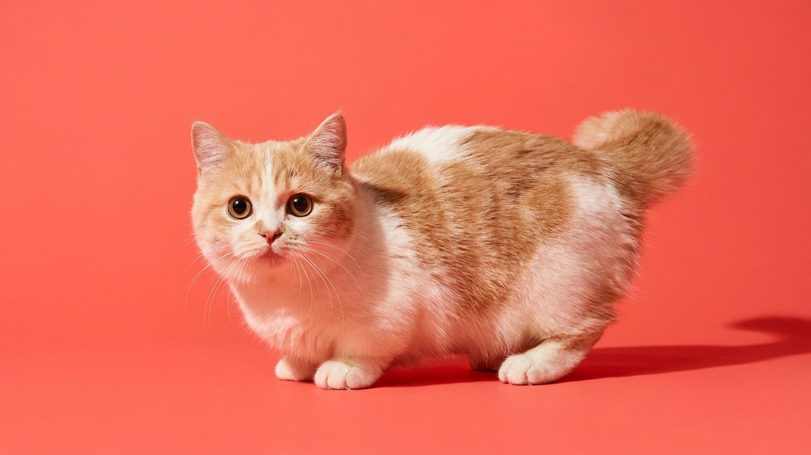

Кошка Наполеон (она же Менуэт, Minuet) — это манчкин с персидской кукольной мордочкой: коротколапая, круглоглазая, с густой шерстью. Она не забирается на холодильник и не прыгает со шкафа — и не потому что не хочет, а потому что устроена иначе. Ниже — как обустроить дом под её особенности, какой уход нужен шерсти и глазам, и кому эта порода подойдёт идеально.
🐾 У вас наполеон?
AnimaLife соберёт уход под породу: к каким болезням есть склонность, что проверять по возрасту, чем кормить и когда пора к врачу. Бесплатно, прямо в мессенджере.
Собрать план ухода → Собрать в MAX →
У вас iPhone? AnimaLife есть в App Store
Наполеон (Менуэт) создан скрещиванием манчкина с персидской линией — в том числе с экзотической короткошёрстной. Порода получила коротколапость от манчкина и округлую «кукольную» мордочку от персидской ветки. Бывает в двух вариантах шерсти: длинношёрстном и короткошёрстном. Название Minuet официально принято в ряде клубов вместо Napoleon — оба варианта корректны.
Коротколапость Наполеона — особенность строения, с которой порода живёт полноценно. Это не мешает кошке играть, охотиться за игрушкой и вести активную жизнь — просто на уровне, близком к полу.
Менуэт унаследовал от персидской линии мягкий и спокойный нрав, от манчкина — игривость и любопытство. Это общительная кошка, которая охотно идёт на контакт и хорошо переносит людные дома. Не кричит и не устраивает концертов, если потребности закрыты.
Главная практическая задача для владельца Наполеона — создать доступ к любимым местам без высоких прыжков. Это не каприз: коротколапой кошке прыжок с высокого дивана или подоконника даётся труднее, чем обычной кошке, и нагрузка на суставы при этом выше.
Уход зависит от варианта шерсти. Длинношёрстный Наполеон требует регулярного вычёсывания: шерсть густая и мягкая, склонна к образованию колтунов, особенно за ушами и подмышками. Щётка или расчёска — 3–4 раза в неделю. Короткошёрстный Менуэт проще: достаточно расчёсывать раз в неделю.
У кошек с уплощённой «персидской» мордочкой слёзные каналы расположены иначе, и глаза могут слезиться активнее. Ежедневно осматривайте глаза и протирайте уголки чистой салфеткой — это несложная привычка, которая предотвращает раздражение кожи под глазами. Если выделения становятся обильными или меняют цвет — обсудите со своим ветеринаром.
Наполеон (Менуэт, Minuet) — порода для тех, кто хочет нежного и общительного питомца без сложного характера и без требований к большому пространству. Идеально подходит для квартиры: не разносит мебель от скуки, не орёт и не конфликтует. Хорошо вписывается в семью с детьми и другими животными. Если вас не смущает регулярный груминг (в длинношёрстном варианте) — кошка Наполеон окажется тихим и ласковым компаньоном на много лет.
🐾 Ваш питомец — наполеон?
Заведите профиль в AnimaLife: приложение запомнит породу, возраст и вес и будет подсказывать по уходу именно для неё. Вопросы AI-ветеринару — круглосуточно и бесплатно.
Завести профиль → Завести в MAX →
У вас iPhone? AnimaLife есть в App Store
🐾 Понравился разбор?
Подпишитесь на канал — каждый день разбираем по одному тревожному симптому у кошек и собак: что в пределах нормы, а когда пора к врачу. Подпишитесь, чтобы не пропустить разбор, который может спасти здоровье вашего питомца.
Материал носит информационный характер и не заменяет очную консультацию ветеринара.